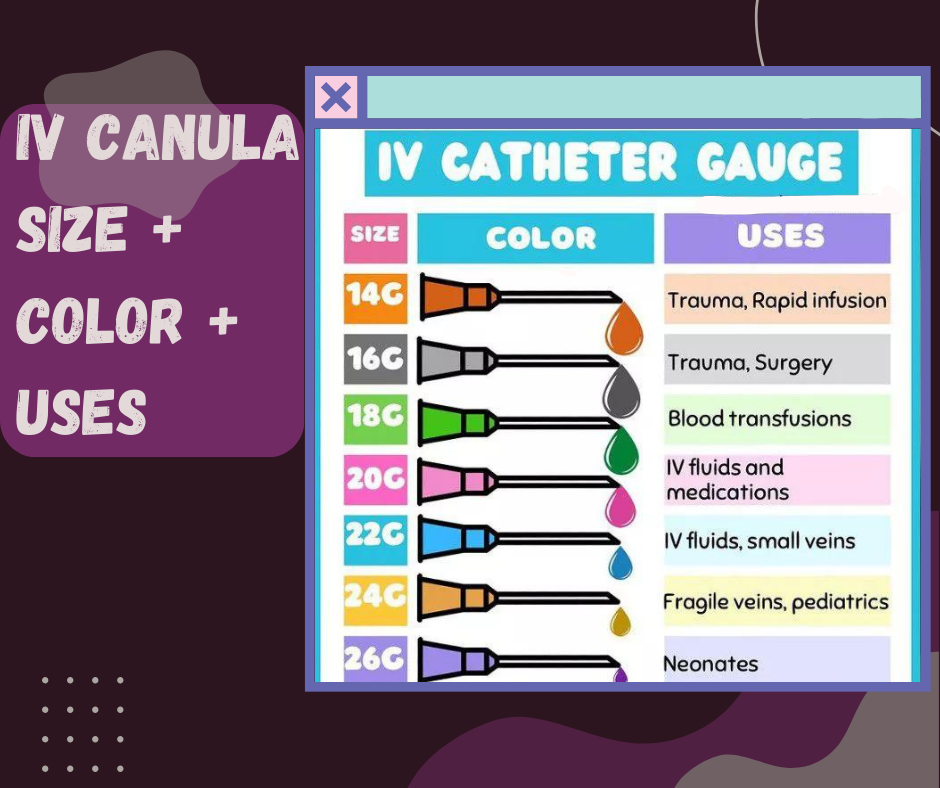
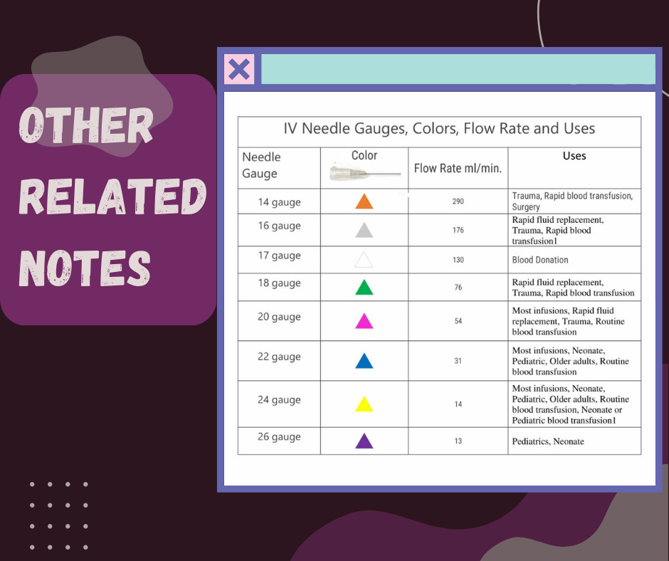

• Selecting the right gauge size for a catheter ensures proper blood flow, as a larger gauge will yield more
efficient delivery of medication or fluids.
• Smaller gauge sizes increase the risk of clotting or embolism due to inadequate flow, which can be
dangerous for patients.
• The more significant the diameter, the more fluid can pass through it in a given time frame, meaning larger
gauge catheters are ideal
• for high-flow situations such as rapid fluid transfusions.
• Different gauge sizes also differ in insertion difficulty, with larger gauges requiring more force and care to
get them into the vein properly.
• If a patient has small veins or is otherwise fragile, selecting a smaller gauge size can make the insertion
process more accessible and less intrusive.
• Gauge size is an essential factor when selecting an IV Catheter as it will determine the overall flow
rate of the catheter, as well as how easy or difficult it is to insert.
For more details, visit Types of IV Cannula: 8 Different Sizes, Colors, and Uses. (pharmchoices.com)


COLOR CODING OF ADMINISTRATION CARD WITH FREQUENCY
|
|
• Color of medication impacts the psychology of the patient and help them in speedy healing and recovery.
Apart from this, the color of medicines is coded in a way so that patient can take his prescription conveniently.
• It plays a crucial part in generating indications for correct dosage and helping the patients in taking their medicines as
per the prescription.
It’s to implement this strategy and calendarize their dosage and schedule. Marking them efficiently can easy the adherence
to the prescription.
• There must be a frequency in every medication since some drugs are time-sensitive for a variety of reasons, and taking
them in a timely manner each day is essential for ensuring effectiveness and minimizing negative side effects.
For more details, visit Importance of Colour Coding in Pharmaceutical Industry (testronixinstruments.com)
IV FLUIDS COLOR CODING
|
|
In intravenous fluid (IVF) administration, color coding serves a crucial purpose. It helps healthcare professionals quickly
identify the type of fluid being administered, reducing the risk of errors. Here’s a breakdown of the color coding
commonly used for IVF:
1. D5 LRS (Dextrose 5% in Lactated Ringer’s Solution): Pink
2. D5 NM (Dextrose 5% in Normal Saline): Orange
3. D5 NSS (Dextrose 5% in Normal Saline): Yellow
4. D5 NR (Dextrose 5% in Ringer’s Solution): Light Green
5. D5 Water: Red
6. D5IMB (Dextrose 5% in Isotonic Maintenance Solution with Bicarbonate): Violet
7. D5 0.3 NaCl (Dextrose 5% in 0.3% Sodium Chloride): Light Blue
8. P NSS (Plain Normal Saline): Dark Green
9. P LRS (Plain Lactated Ringer’s Solution): Blue
For more details, visit IV Fluids Clinical Discussion | PPT (slideshare.net)
ABBREVIATIONS IN MEDICAL FIELD
|
|
Medical abbreviations play a crucial role in the healthcare field for several reasons:
1. Time-Saving: In the fast-paced medical environment, professionals need to record information efficiently.
Abbreviations allow them to quickly jot down essential details. For instance, writing “CPAP”
(for continuous positive airway pressure) is much faster than the full phrase.
2. Universal Communication: Abbreviations provide a common language across different healthcare settings. Whether in a
bustling city hospital or a rural clinic, “WNL” (meaning “within normal limits”) retains the same meaning.
This consistency aids in patient transfers and record sharing.
3. Confidentiality: While not originally designed for this purpose, abbreviations now help protect patient privacy.
Unauthorized viewers may struggle to decipher confusing abbreviations, especially since the implementation of HIPAA
(Health Insurance Portability and Accountability Act).
4. Efficiency and Accuracy: Standardized abbreviations promote clear communication, reducing the risk of misinterpretation
and errors. They streamline documentation and record-keeping processes, allowing more time for patient care.
However, it’s essential to use abbreviations judiciously. Some abbreviations can lead to serious medical errors if misinterpreted.
Therefore, healthcare professionals must strike a balance between efficiency and clarity when using these shorthand forms. 🏥📝
For more abbreviations, visit A-Z List of Common Medical Abbreviations, Acronyms & Definitions (medicinenet.com)

| | | |